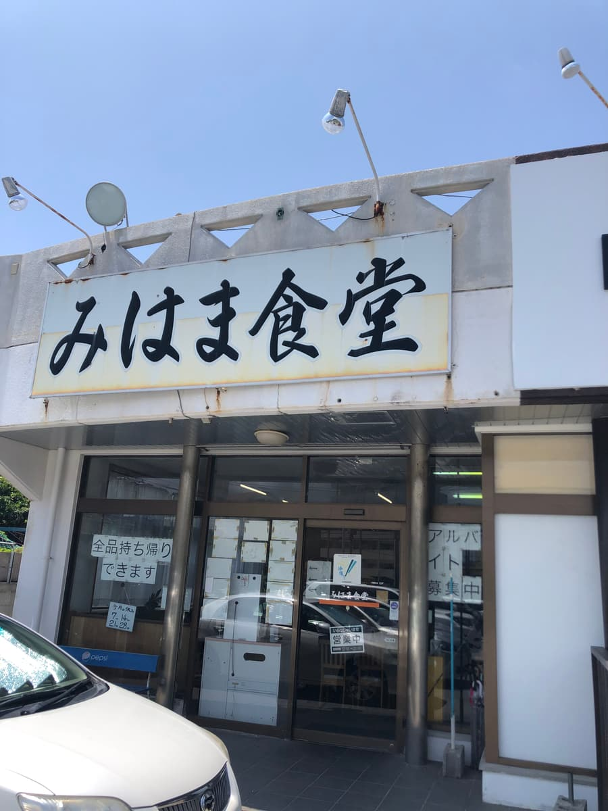
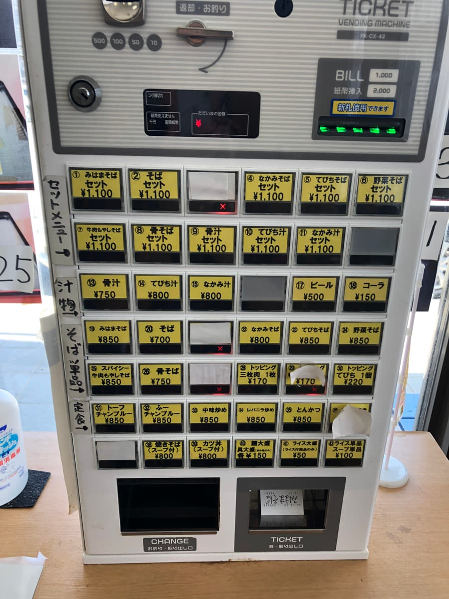
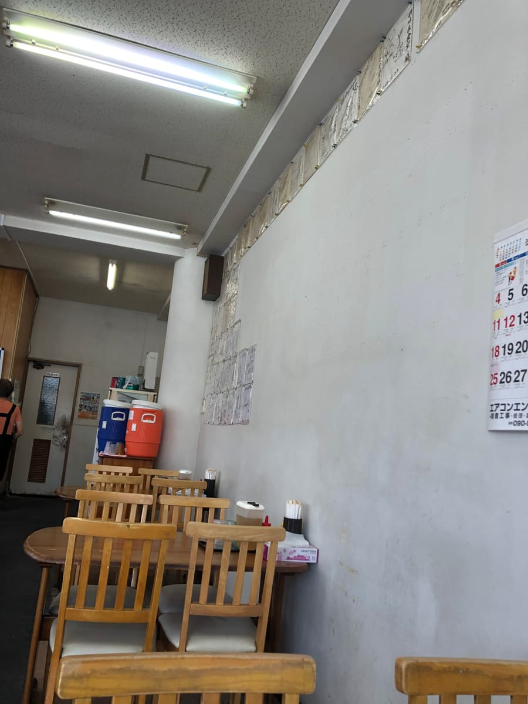
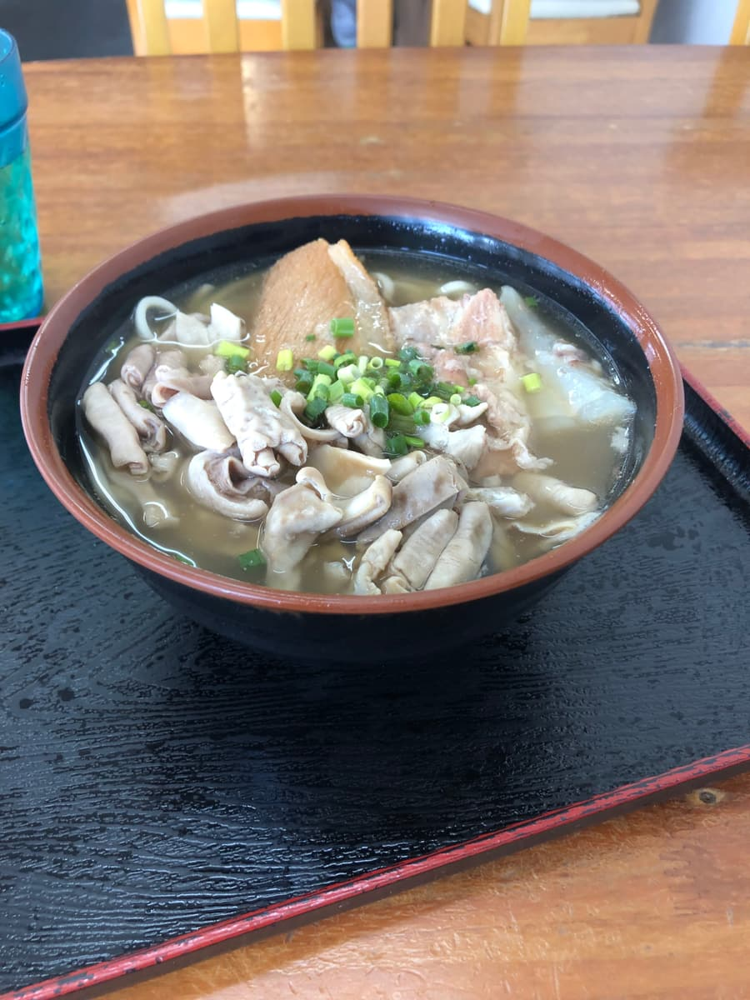
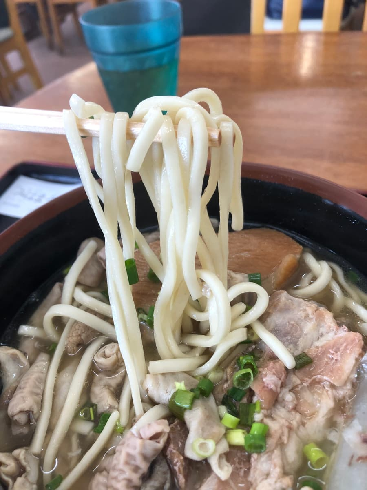

*This article was created with AI (ChatGPT 4o) and partly edited by me 😆
In August 2024, this time I visited "Mihama Shokudo" in Mihama, Chatan Town 😆

The shop's exterior has a somehow nostalgic feel, with the atmosphere of an old-fashioned Okinawan diner. It has a simple, tasteful charm, and a ticket machine sits enthroned at the entrance. The ticket machine has an extensive menu, all at affordable prices. There are also many quintessentially Okinawan soul-food dishes such as pork bone soup. I bought a ticket at this ticket machine and went on inside the diner.

The interior also has a simple, rustic atmosphere, with tables and chairs lined up and old autographs and menus posted on the walls, which felt somehow homey. The slightly dim lighting and warm wooden tables are somehow calming. Many of the customers seemed to be local regulars, plus some tourists. It felt like a place loved by both tourists and locals. I love the atmosphere of diners like this 😊

Among the soba-only items on the ticket machine, I ordered the "Mihama Soba" in the top left, named after the shop, which seemed to be the top recommendation.

At other shops I've toured so far, the soba that shares the shop's name has generally been an Okinawa soba with all the meats on top (soft-bone pork ribs (nankotsu soki), braised pork belly (sanmai-niku), bone-in pork ribs (hon-soki), pig's feet (tebichi), etc.), so I was imagining that kind of Okinawa soba this time too, but to my great surprise (°°), it had pork offal (nakami) in it lol
I'd been saving my chance to eat pork offal soba at a famous "Nakami Soba" shop in Nago all this time, so having my first pork offal experience here was a bit unplanned 😅
Now, the all-important "Mihama Soba." When I first looked at the bowl that was brought out, the first thing that leapt into view was a generous amount of "pork offal (nakami)." This would make it my first pork offal soba experience, and just from the look of it, it's packed with volume. The broth is bonito-flake-based, and it tasted a little strongly salty. The bonito flavor is solid, but because the salt was overdone, my first impression was that it was a bit salty.

The noodles are thin, straight, and soft in texture. However, I felt I'd like a bit more firmness. Personally, I thought noodles with a bit more springiness might go better with the broth. But this softness creates a nostalgic feel, and that works in its own way ✨
There were also braised pork belly (sanmai-niku) and soft-bone pork ribs (nankotsu soki), seasoned on the light side and simmered until tender. The braised pork belly in particular was very tender, but some sinew remained and it was a bit chewy. The soft-bone pork ribs were tender and I could enjoy them right down to the bone, but they didn't have any special impact, and overall my impression was "it's ordinary" 😅 The pork offal was also decently tasty.
Overall, Mihama Shokudo's "Mihama Soba" was a dish that let me feel the goodness of old-fashioned Okinawa soba. The shop's atmosphere and diner-like simplicity were really good, but the soba itself had no particularly standout features; it's something you can enjoy without any surprises. It felt like an everyday spot for locals. The prices are reasonable too, and I think it's a very good place to casually drop by for an everyday lunch.
For an Okinawa soba tour, Mihama Shokudo scores pretty high in that you can enjoy the local flavor while feeling the atmosphere of the area, but if you're looking for surprise or novelty in taste, another option might be better. Still, it's the perfect shop for when you want to immerse yourself in the local Okinawan vibe or spend a relaxed time 🌺
Rating (9/15): It's decently tasty. It's an Okinawan diner near the tourist area of Chatan Town, so why not give it a try once when you come sightseeing 😄
Noodles: ★★★☆☆（3）
Soup: ★★★☆☆（3）
Toppings: ★★★☆☆（3）